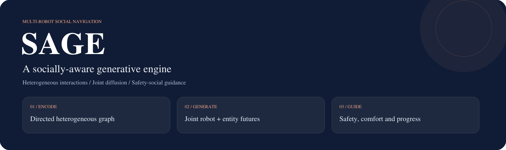
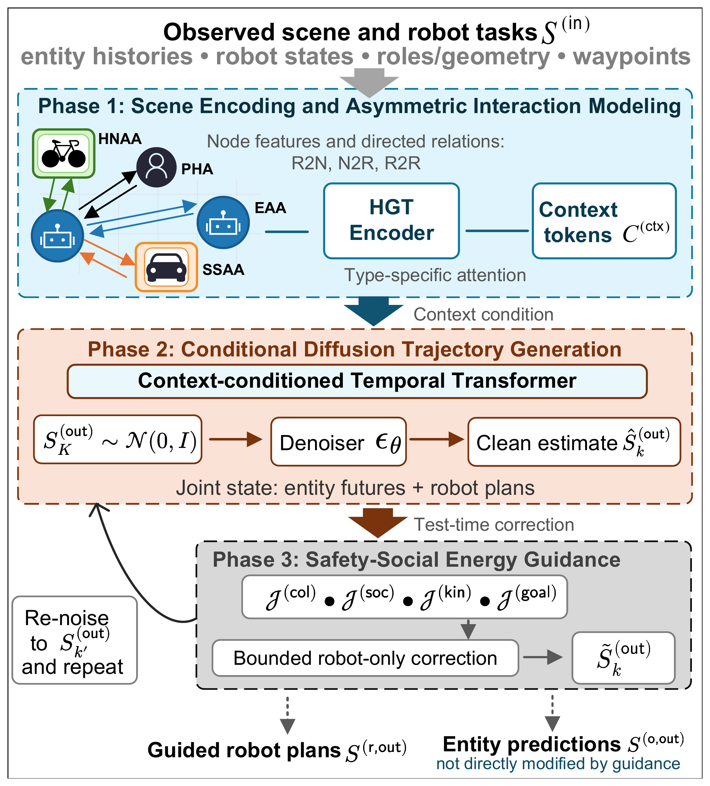
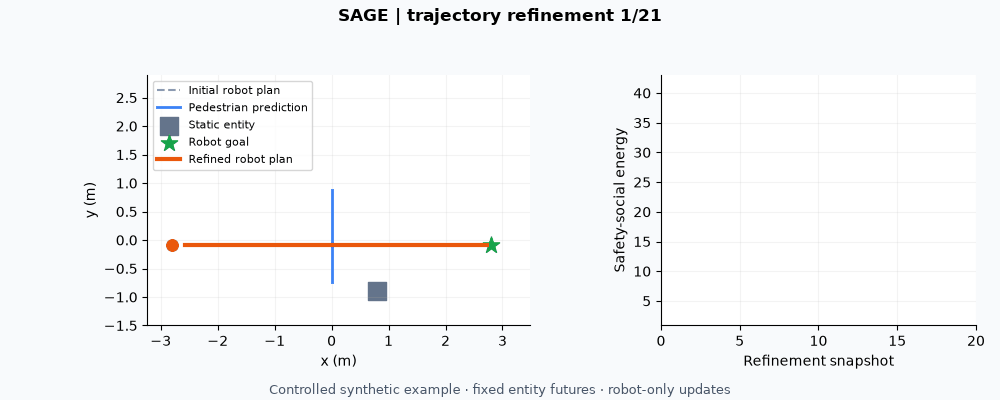
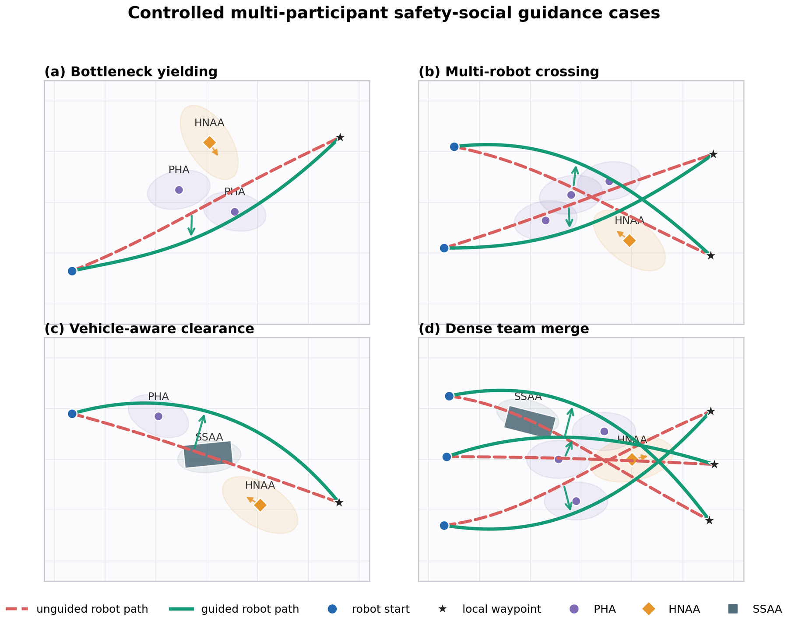
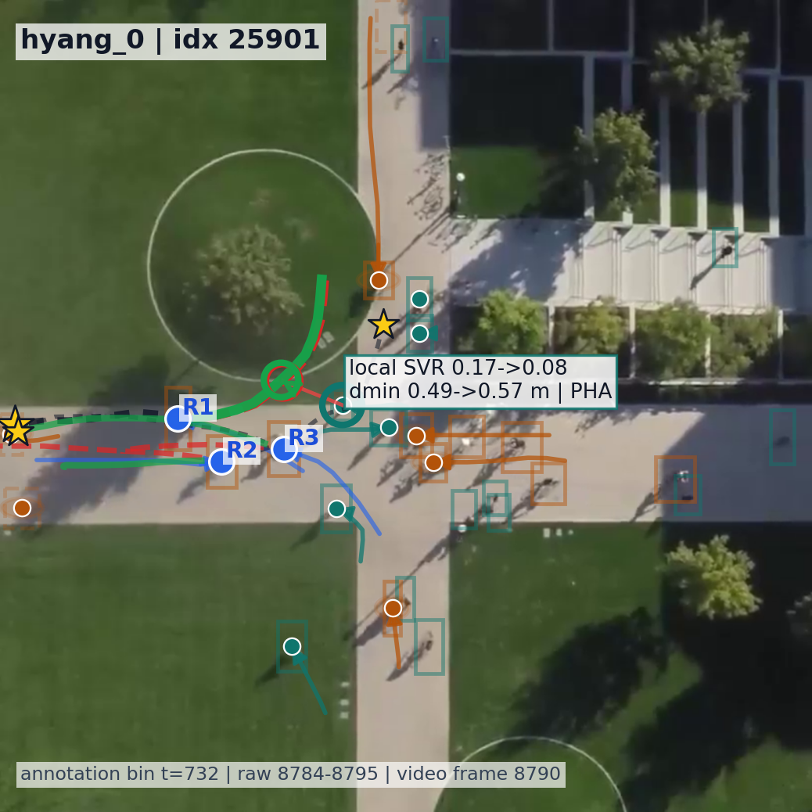
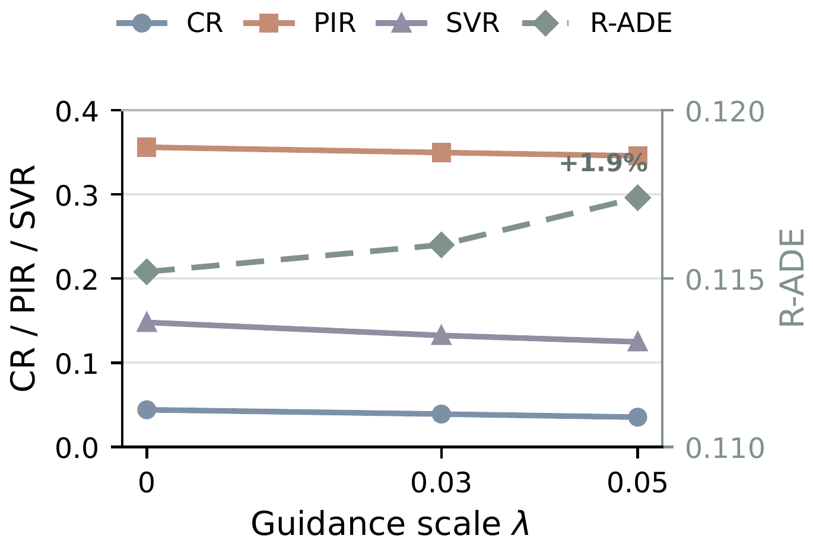
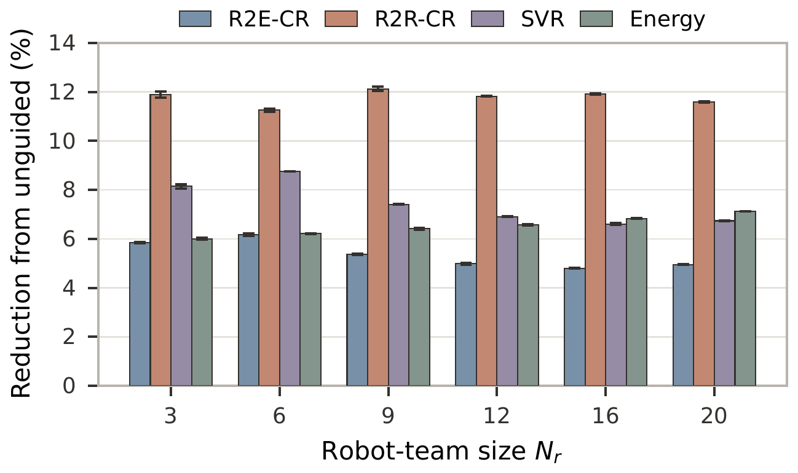

Multi-robot social navigation
SAGE: A Socially-Aware Generative Engine for Heterogeneous Multi-Agent Navigation

Overview
SAGE jointly generates robot plans and surrounding-agent trajectories, then refines robot motion with safety and social guidance.
- Encode heterogeneous interactions: directed, role-aware graph representations.
- Generate joint futures: conditional diffusion for robot plans and entity trajectories.
- Refine robot motion: differentiable safety, social, kinematic and goal guidance at inference.
Method

Demo
The CPU example refines a crossing-scene robot trajectory while keeping entity predictions fixed. Runs on CPU with no dataset.

python -m sage.demo --output outputs/demoQualitative results


hyang_0). Imagery belongs to the Stanford Drone Dataset and follows its terms.

Results
| Setting | Reported result |
|---|---|
| ETH/UCY | Prediction, guidance and ablation records using a target-as-robot proxy |
| Stanford Drone Dataset | Navigation results using semantic annotations |
| Synthetic navigation | Guidance trade-offs and robot-count scaling |
The repository retains 44 result CSVs; protocols and status are listed in the result index.
Quick start
git clone https://github.com/Larryhul/SAGE.git
cd SAGE
python -m pip install -e ".[dev]"
python -m sage.demo --output outputs/demoBibTeX
@misc{sage_manuscript,
title = {SAGE: A Socially-Aware Generative Engine for Heterogeneous Multi-Agent Navigation},
author = {Hu, Lan and Liwang, Minghui and Zhu, Wenbo and Yi, Xinlei and Hong, Yiguang and Wang, Xianbin and Jiao, Zhenzhen and Hosseinalipour, Seyyedali},
year = {2026},
eprint = {2607.16619},
archivePrefix = {arXiv},
primaryClass = {cs.RO},
url = {https://arxiv.org/abs/2607.16619}
}